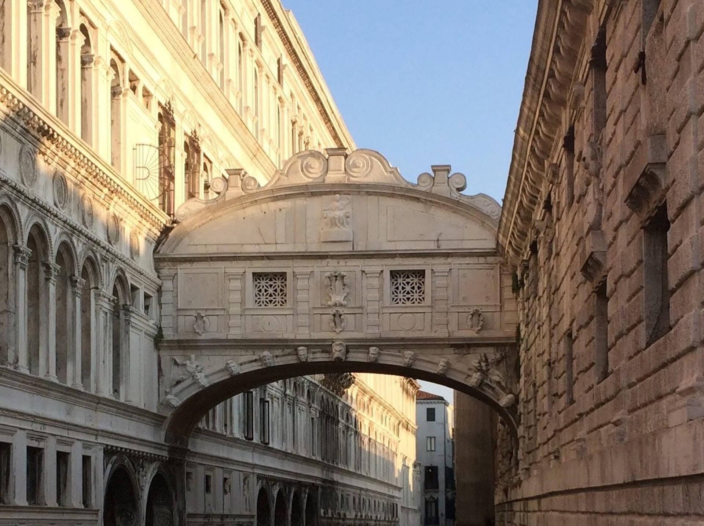

里亚托桥（1591）：大运河上最古老、也是“银行与市场”的桥--桥上商铺租金养桥的模式运行了 430 年。叹息桥（1600）：总督宫法院通向监狱的封闭石桥，被拜伦浪漫化后成为威尼斯的“眼泪地标”。两座桥，一半烟火一半传说。
看点路线
Il Percorso
- 1里亚托桥中段两侧拱窗：大运河东西向的最佳取景框
- 2清晨的里亚托市场：鱼贩吆喝，威尼斯 900 年不间断的市集
- 3叹息桥最佳外景位：Strada Nova 一侧的 Ponte della Paglia 桥
- 4日落时分乘 1 号水上巴士穿过里亚托桥下--船上看桥是隐藏玩法
两桥看点
I Ponti · 5 个细节

里亚托桥的三次重生
1181 年先是浮桥，1255 年改建木桥（桥面中段可抬起放行桅杆）。1444 年观婚礼的人群把木桥踩塌，16 世纪终于决定建石桥。设计竞赛的落选者里包括米开朗基罗--赢家安东尼奥·达·蓬特（名字意为“桥”）用一个大胆的单拱跨越 28 米，桥下可通行桨帆船。
桥上的“购物中心”
石桥建成时就设计了 12 间商铺（两侧各 6 间），租金用于养桥--欧洲最早的 PPP 项目之一。今天珠宝店与纪念品店的橱窗，仍是 430 年前金匠与银行家们占过的位置。莎士比亚《威尼斯商人》里夏洛克的台词：“里亚托上人们怎么议论我？”--这座桥就是中世纪的“华尔街”。

叹息桥的石格窗
两层封闭廊桥，石灰岩墙面只开小小的石格窗。囚犯过桥时透过石格最后看一眼潟湖与圣乔治岛。真实历史里，这声“叹息”大多属于小偷与欠债人--浪漫是拜伦给的，牢房是共和国给的。
Ponte della Paglia：最佳观赏点
总督宫东侧的小石桥，正对叹息桥。日落时分从这里看叹息桥与泻湖同框，是威尼斯最经典的画面之一。传说日落时情侣乘船从叹息桥下亲吻穿过，爱情就会永恒--桥的本义与传说，在快门声里完成和解。
里亚托市场的清晨
桥边的鱼市从 1097 年营业至今：凌晨渔船靠岸，5-9 点是本地主厨的采购时段。逛完市场去街角的 Cantina Do Spade（1450 年代开业的 bacaro 小酒馆）吃一份 cicchetti（威尼斯小食）配 ombra 小杯酒--这是里亚托桥 900 年没变过的早晨。
历史故事
Le Storie
壹一座桥的 430 年商业模式
1591 年石桥落成时，威尼斯参议院面临一个问题：28 米单拱石桥太贵，谁出钱维护？答案是商人：桥上 12 间店铺拍卖出租，租金进入“桥基金”。银行家们还建议把桥设计成“两段活动桥面”以放行高桅船--被 architect 拒绝了：单拱够高，船放倒桅杆即可过。
结果双赢：商人得到全城最黄金的铺位（鱼市与银行区的人流必经），城市得到一座免费维护的纪念碑。今天米兰的长廊、巴黎的拱廊街、乃至现代商场的“中庭店铺”逻辑，都能在这座桥上找到祖先。
2016 年大修后，桥面恢复了原来的浅色石板（曾被游客脚步磨得凹陷）。修桥时发现的拱顶内部空腔证明达·蓬特的拱比看起来更轻--难怪它扛住了 430 年的人潮与几十次大洪水。
贰叹息桥：从刑具到浪漫符号
“叹息之桥”这个名字来自拜伦 1818 年的长诗《恰尔德·哈洛尔德游记》："我站在威尼斯的叹息桥上，一边是宫殿，一边是监狱。"--诗人把囚犯的叹息写成了浪漫的叹息，一写成名。
真实的囚犯名单要乏味得多：小偷、造假币者、欠债的赌徒与少量政治犯。传说中“卡萨诺瓦式”的冤情很少，多数人在桥上叹息的是自己确实干过的事。19 世纪浪漫主义把这座桥变成了“爱情的圣地”：传说日落时从桥下乘船亲吻的恋人将永浴爱河--这个传说没有任何中世纪文献依据，但比历史活得更好。
今天它同时存在于两个语境里：总督宫的游客从桥内走过，看石格窗外的潟湖；浪漫的情侣乘贡多拉从桥下穿过，拍照接吻。一座桥，同时是权力的管道与爱情的背景板--威尼斯的典型双重人格。
参观贴士
Consigli Pratici
- 里亚托桥清晨（8 点前）与深夜人少；白天桥上人贴人，包前置
- 拍里亚托桥全景：东岸 Fondaco dei Tedeschi（前德国商馆）屋顶露台免费、需预约时段
- 叹息桥外观最佳时段：日落前 1 小时（Ponte della Paglia），顺光带金
- 1 号水上巴士线（San Marco -> Rialto 段）白天每 12 分钟一班，坐船看桥最省力
- 里亚托市场周边 bacaro 小酒馆午餐（cicchetti + ombra）是本地人吃法，人均 €10-15
- 从里亚托步行到圣马可约 10 分钟，沿 Merceria 购物街走最顺
顺路同游
Da Non Perdere